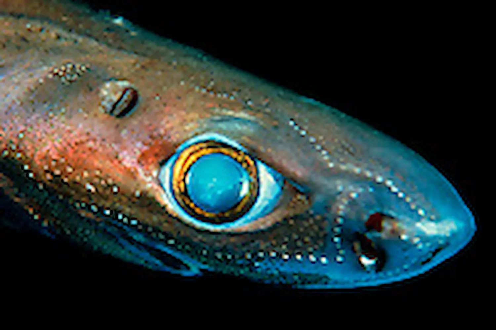
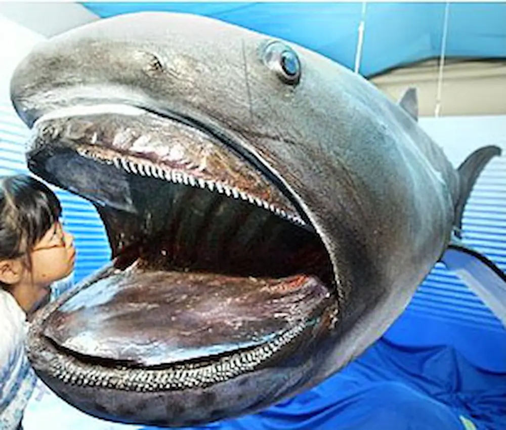
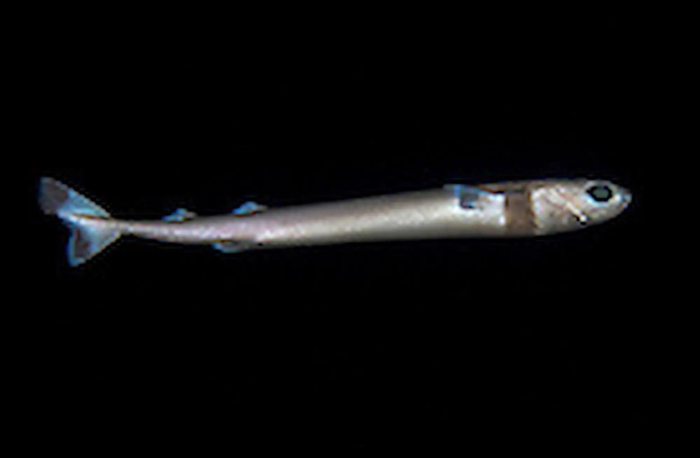

Lantern Shark
Lantern sharks are pretty small compared to other sharks.
The biggest they get is around 2 feet long.
Very litte is know about the amazing Lantern sharks.
They typically have a large snout and broad tail.
Fun Fact: The sharks are typically found at depths around 1,148 to 7,260 feet deep.

Megamouth Shark
A Megamouth shark has many small teeth instead of big ones.
There are not amny records of sighting of the Megamouth sharks.
Most of it is speculated or guessed indicating the species is very rare.
"Probably migrates vertically with plankton, close to the surface at night, and deeper by day."
Fun Fact: The fist of it's kind was found in 1976.

Cookiecutter Shark
The Cookiecutter shark has 23-31 rows of sharp triangular teeth on it's bottom jaw.
It's bite look just like a circle. Hence it's name, Cookiecutter, because it looks like a circular cookiecutter was used.
The shark has, "...small cigar-shaped shark with a very short bulbous snout.
The shark has suctorial lips, its dorsal fins are set far back,
and it has a large, nearly symmetrical paddle-shaped caudal fin with a long ventral lobe."
Fun Fact: The Cookiecutter shark grows to be just a little over a foot max.